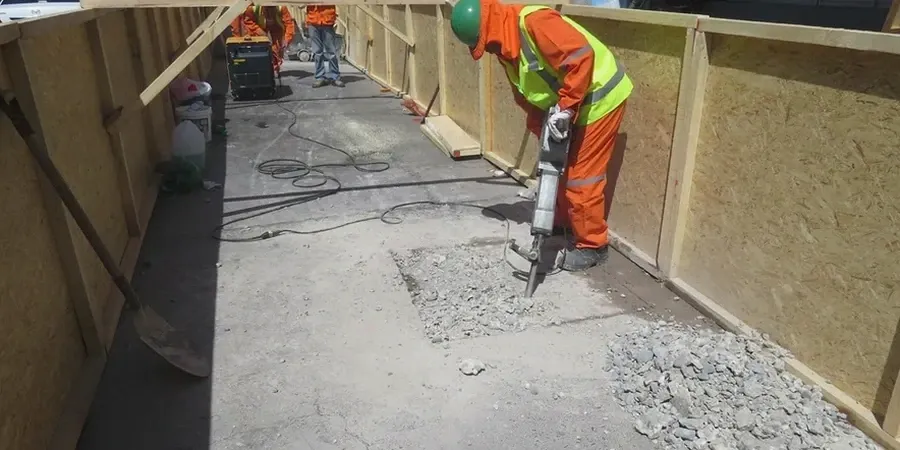

Our team provides comprehensive geotechnical engineering services across Garden Grove, supporting residential, commercial, and infrastructure projects with localized expertise. From subsurface investigations and site characterization to foundation design and construction monitoring, we deliver code-compliant solutions tailored to the region's unique ground conditions. With consolidated regional experience, we help clients navigate the challenges of shallow groundwater, expansive soils, and seismic demands. Whether you need a preliminary soil assessment or detailed design parameters for a complex structure, our work is grounded in reliable field data and calibrated laboratory testing. Explore how our field permeability testing and seismic foundation design capabilities can support your next project.

Technical reference image — Garden Grove
Approach and scope
Garden Grove lies within the Los Angeles Basin, underlain by a thick sequence of Quaternary alluvial deposits derived from the Santa Ana River and surrounding uplands. The typical subsurface profile consists of interbedded silty sands, clayey sands, and sandy silts, often with lenses of gravel and cobbles at depth. These alluvial soils are generally medium dense to dense, but near-surface layers can be loose and prone to settlement under dynamic loads. Groundwater is typically encountered at depths of 10 to 25 feet, varying seasonally and with proximity to the Santa Ana River and local recharge zones. Shallow groundwater can impact excavation stability, foundation drainage, and necessitate dewatering during construction.
Seismically, Garden Grove is in a high-hazard zone due to nearby active faults, including the Newport-Inglewood and San Andreas fault systems. The alluvial basin fill can amplify ground motions, and the potential for soil liquefaction exists in loose, saturated sandy layers. Lateral spreading and cyclic softening of silty clays are also concerns in certain areas. Our investigations routinely assess these hazards through advanced in-situ testing and laboratory cyclic triaxial tests, ensuring foundation designs address both static and seismic loading conditions per current codes.
Site-specific factors
Our team brings consolidated regional experience to Garden Grove, having completed numerous projects in the Los Angeles Basin and Orange County. We operate a calibrated geotechnical laboratory that provides high-quality index and strength testing, ensuring our design parameters are both reliable and defensible. We maintain strong working relationships with local building officials and contractors, facilitating smooth plan reviews and construction-phase support. By combining local geologic knowledge with rigorous compliance to ASTM and CBC standards, we deliver technical clarity and practical solutions for every project phase.
Our work in Garden Grove adheres to U.S. standards including the California Building Code (CBC) which adopts ASCE 7-22 for seismic loads and IBC 2021 for general provisions. Field and laboratory testing follow ASTM standards: ASTM D1586 for Standard Penetration Test, ASTM D2435 for consolidation, and ASTM D2850 for unconsolidated-undrained triaxial compression. Seismic hazard analyses reference ASCE/SEI 7-22 Chapter 11 and USGS seismic hazard maps. All reports are prepared under the responsible charge of a licensed Professional Engineer and meet the requirements of local building departments.
Q&A
What are the typical soil conditions in Garden Grove and how do they affect foundation design?
Garden Grove's soils are predominantly alluvial sands, silts, and clays with variable density and moisture content. Shallow groundwater and the potential for liquefaction in loose sandy layers require careful site-specific evaluation. Foundations are often designed with deep elements such as driven piles or auger-cast piles to bypass problematic near-surface soils, or with mat foundations on improved ground. Expansive clay layers can also necessitate moisture control measures.
Does Garden Grove have any special seismic or geologic hazards I should be aware of?
Yes, the region is subject to strong seismic shaking from nearby faults, and the alluvial basin can amplify ground motions. Soil liquefaction and lateral spreading are hazards in areas with shallow groundwater and loose sands. Our site investigations include cone penetration testing (CPT) and shear wave velocity measurements to quantify these risks and develop site-specific response spectra for design.
What geotechnical reports are required for building permits in Garden Grove?
Most commercial and residential projects require a geotechnical investigation report prepared by a licensed engineer, addressing soil bearing capacity, settlement, seismic site class, liquefaction potential, and foundation recommendations. The report must comply with CBC Chapter 18 and ASCE 7-22. Additional studies such as a geohazard report may be needed for hillside or floodplain properties.
How long does a typical geotechnical investigation take for a Garden Grove project?
For a standard single-family lot, field drilling and sampling can be completed in one to two days, with laboratory testing and reporting taking two to three weeks. Larger commercial projects with multiple borings and advanced testing may require four to six weeks. We coordinate closely with your schedule to deliver reports in time for design and permit submission.